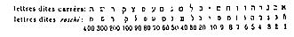

{1} Zuhuri Danışman, Osmanlı İmparatorluğu Tarihi. İstanbul 1965, C. 9. S. 209.
{2} Çetin Altan, Tarihin Saklanan Yüzü, İstanbul 1997, S. 228.
{3} Mufassal Osmanlı Tarihi, C.4, S. 1984, İstanbul, 1960.
{4} Zuhuri Danışman, a.g.e C. 9, S. 266.
{5} Reşid Ekrem Koçu, Osmanlı Padişahları, S.343 İstanbul, 1981.
{6} Dr. David E Mark us. Trois Mille Ans d’Hıstoire Juive, İstanbul 1936.
{7} Prof. Dr. İlber Ortaylı, Osmanlı Modernleşmesi ve Sabetaycılık. Tiryaki, Mayıs 1998, İstanbul.
{8} La Haye MDGCIX Johnson Kitapevi
{9} IV. Cilt Amichpat Basımevi Sofya. 1934-1935.
{10} Kitlesel göç. 23/23
{11} Bu hesaplar için bak. sayfa 15-23
{12} İşte, İbrani alfabesi harflerinin sayısal değeri:

{13} Işaya, 27/13.
{14} Hezekiyel, 28/25.
{15} Hezekiyel, 34/13.
{16} Hezekiyel, 37/1-14.
{17} Amos, 9/14-5
{18} Zefanya, 3/20.
{19} Sayfa 34.
{20} Sanedrin, S.98.
{21} Sanedrin s. 97. - Saduceenler liberal fikirleri ile tanınan bir Yahudi tarikatının üyeleridir; ruhun ölümsüzlüğünü ve dirilişi inkâr ediyorlardı.
{22} Sabbat s. 139.
{23} Sanedrin, s.98.
{24} Sanedrin, s.98.
{25} Yebamot s. 60/2.
{26} Sanedrin, s.98.
{30} Levililer, 25/13.
{31} Levililer, 16/13.
{32} Kendisi de sofu olan Aziz Jean vahyin bir yerinde bin yıldan (bölüm 20/3) ve, başka bir yerinde, 666 sayısından (bölüm 13/18) bahseder. Bu iki sayı arasında hiçbir orantı olmamasına rağmen sofu Hıristiyanlar buradan 1666 tarihini üretirler.
{33} Ricaut, Osmanlı İmparatorluğu Tarihi, Cilt 11, s. 169-170. La Have M. DCC, IX.
{34} Mehdi Arapçada Tanrı tarafından yönetilen, yol gösterilen anlamındadır. Birçok kimseye verilen bu ada Halife Ali’nin bir yakını da sahipti. Mehdi bazılarına göre 4 ilâ 5 yaşlarındayken, başkalarına göre ise 17 yaşındayken, hicrî 259 yılında baba evinden kaçıp kayıplara karışmış. Şiiler, ya da Ali’nin müritleri, Mehdi’nin bir gün İslamiyet’in düzeltilmesi için çıkması gerektiği güne kadar bir mağarada saklandığına inanıyorlardı.
{35} Sayfa 47, a. ve b.
{36} Işaya, 64/4.
{37} Bak. II. Bölüm.
{38} Odese, 1/2.
{39} Joel, 2. Bolüm.
{40} Joel, 3/1-3.
{41} Mezamir (Mezmur), 27/4.
{42} Mezamir, 68/19.
{43} Sabbat, s.88.
{44} Yad daim perekz, mishna, 5.
{45} İlahîler İlahîsi, 2/9.
{46} Rosanes, IV, s. 79. Amashiyah vive nivle be avishmeelim (Pirke deribbbi Eliyezer).
{47} Türkler ona Kara Menteş diyorlardı. Kara Türkçe’de siyah demektir. Menteş ise Mordehay’in Türkçe’sidir. Kara Menteş’in anlamı Esmer Mordehay’dir.
{48} On emirin yayınlanmasından önce, Tanrı Musa’ya Yahudileri kutsamayı emreder ve bu emir sonrasında kadınlara yaklaşmak yasaklanır. (Kitlesel Göç, 19/10/15. bolüm). Karısından uzak duran Sabetay büyük olasılıkla bu ayetten etkilenmiş olsa gerek.
{49} Bak. s. 15-16.
{50} Süleyman tapınağının yıkılmasından önceki dönemlerde Tanrı’nın ağza alınması yasak olan bu “dört harfli Tetragramı” sadece baş haham telaffuz edebilirdi. Tapınak artık mevcut olmadığı için, bu sözcüğün telaffuzu Mesih gelince, yani bu tapınağın yeniden inşa edilmesine müteakiben Yahudi krallığının yenilenmesi esnasında gerçekleşecekti. Sabetay bunu bilmiyor değildi. O sıralar bu ayrıntıları dikkate almamış ve samimi olsun olmasın, Mesih’in geliş tarihine ilişkin, Zohar’ın kehanetlerine inanarak Tetragramı telaffuz ediyordu.
{51} Bugün İstanbul’da bu aileden gelen kimseler mevcuttur.
{52} Bu düzmece belgeyi Yakini’ye atfetmek boşunadır. Sabetay Sevi Müslüman olduktan sonra Andrinople hahamlarına yaptığı açıklamada, adı bu eserde defalarca anılan Nathan de Gaza’nın bir yerlerde bulduğu eski bir kitapçığa sahip olduğunu ve birkaç paragraf sonra oraya kendi adını, yani Sabetay yazdığını beyan ediyordu.
{53} Rosanes, IV, s. 52.
{54} Rosanes, IV, s. 53.
{55} Osee, 1-2.
{56} Ekteki A belgesinde, Rosanes tarafından İbrani’ce basılmış bu sirkülerin Fransızca çevirisine bakınız. Cilt IV s. 58.
{57} Rosanes, IV, s. S9.
{58} Rosanes, IV, s. 62.
{59} Yukarıya bak. S. 20.
{60} 8/18.
{61} Ekteki belge B’ye bakınız.
{62} Rosanes, IV, s. 63. Bu duanın tam metni için ekteki belge C’ye bakınız.
{63} Cilt II, s. 176-178.
{64} Rosanes, IV, s. 65.
{65} Daha ilerideki “Bir Ermeni bölümü”ne bakın.
{66} Bu sıralamanın tam listesi için ek D’ye bakınız.
{67} Daha ileride bak. “Sabetay Sevi hakkında bir Ermeni şiiri”.
{68} Bakın Sabetay’a yapılan bu ziyareti Ricaut nasıl anlatıyor: “Onu, Yuda’nın tahtına çıkmış gibi epeyce güçlü bir seremoni ve saygı gösterisiyle çevrelediler. Yahudilerce güçlü erkek telakki edilen Anacogo dâhil onun karşısında gözler yere eğik ve vücut eğilmiş vaziyette ve kolları birleştirilmiş halde; yani mütevazılığın son kertesinde bir gün boyunca duranlar bile oldu. Tek kelimeyle, ne onun bulunduğu yerin aşağılayıcı özelliği, ne de bir Peygamberi tanımayı olanaksız kılan zincirler onun hakkında sahip oldukları yüksek düşünceyi eksiltmedi.
Bu coşkunluk, diğer şehirlerdeki şiddetle birlikte, İstanbul Yahudilerini etkilemişti. Ticaret durmuştu ve borçlular alacaklılarını düşünmeyi akıllarına bile getirmiyorlardı. Bu tuhaflıklar içinde, Galatalı İngiliz tüccarlara para borcu olanlar ve ödemeden bahsetmek istemeyenlerde bulunuyordu. Borçlularından parayı nasıl alacağını bilemeyen tüccarlar Sabetay’a gidip, gelişinin haberi üzerine kendilerini aldatmaya kalkan Yahudilerin peyda olduğunu ve alacaklarının tahsili için emir vermesini istediler. Bunun üzerine Sabetay dert yanan tüccarların muhataplarına bir mektup yazarak borçlarını ödemelerini emretti.” (Bu mektubun içeriği için ekteki belge E’ye bak.)
{69} Ekteki belge F’ye bak.
{70} Daha ilerideki “Sabetay Sevi hakkında bir şiir”e bakınız.
{71} a.g.e.
{72} Bu doktorun Yahudi adı Moşe ben Rafael Abravanel’dir.
{73} Bak. “Bir Ermeni şiiri” vs.
{74} Ricaut, Cilt II. S. 197.
{75} Cilt II. S. 198.
{76} 5. Bölümdeki “Silahtar Tarihi’ konulu yazıya bak.
{77} Bak. Ekteki belge G.
{78} Bak. Ekteki belge H.
{79} Bak. Ekteki belge I.
{80} Bak. Ekteki belge J.
{81} Ayrıntılar için bak. Rosanes. IV, s. 80-84.
{82} Ricaut, Cilt I, s. 202-209.
{83} Rosanes, IV, s. 88-89.
{84} Tome 35, yıl 1897.
{85} Sabetay Sevi.
{86} Beriya yaradılışı simgeler. Bu emir bir yandan zinayı yasaklarken diğer yandan belirsiz bir şekilde izin vermektedir. Sabetaycılar evlilik hususunda uzun süre komünizmi uyguladılar. Aynı emirde anılan bu hırsızlar kimdir? Bize göre, yabancı kimseler ve evli olmayan sabetaycılardır, yani evliliğin sırlarına vakıf olmayanlardır.
{87} Yani, Sabetaycı olmadıkları halde bile…
{88} Türban İnancı İslamiyet, Sabetay doktrincilerine özgü bir İslamiyet anlamına gelmektedir. Üstat mücadeleciler, gizemlerinde, hiç bir şeyden tereddüt etmeksizin gönüllü olarak girenler dışında, dinsel olmayan unsurlara yer vermeyen tarikat yöneticileridir.
{89} Güneş tutulduğu zaman, ay dünya ile güneş arasına girer. Diğer bir ifadeyle Güneşle yüz yüze kalır. Temmuzun 2. günü güneş tutulması oldu. Yahudiler bu olayı bir Mesihlik emaresi* saydılar. Sabetay muhtemelen 15. emrinde her ay gerçekleşmesini beklediği, diğer bir ifadeyle Mesih’in gelişini çabuklaştıran bir mucize saydığı bu olayı ima etti.
* VI Bölümde “Sabetay Sevi’nin bir Ermeni Şiiri” adlı çalışmaya bakınız.
* Danon’a göre bu rakamlar 21 ve 24 ‘tür.
{90} S. 113.
{91} “Sepher Ahalomot Kets apelaot”un yazarı Nisanın 7’sine rastlayan ve bir güne indirilmesi gerekli görülen Paskalyanın reformundan söz ediyor. Ve yazar şöyle devam ediyor: “Zira Sabetay’ın düşmanları o İzmir’den uzaklaştırıldığı gün ondan kurtulduklarını zannetmişlerdi, oysa o Selanik’e varır varmaz öğrencilerinin ve kehanetlerinin eğitimi ile ilgilenmeye başladı. Bu güne Hag Meorot gedolim adı verilir” (s. 130).
{92} Sefer Ahalomot Kets apelaot s. 131.
{93} a.g.e., s. 116.
{94} Çocukların doğumundan hemen sonra onları tuzla yıkamak bir alışkanlıktır. Bu durumda, Sabetay’ın doğumu 9 değil 15 Ab olmalıdır. Aynı alışkanlık küçük kuzulara da uygulanmıştır.
{95} Rosanes, IV, a. 471.
{96} a.g.e., IV, s. 471.
{97} 15 Kasım 1925 tarihli Resimli Dünya dergisi.
{98} Bu isme IV. Bölümde bakınız.
{99} Genese, 41. bölüm.
{100} Ağaçların yeşermesini kutsama alışkanlığı doğulu Yahudiler arasında eskiden mevcuttu ve belki de hala mevcuttur. Bu, tören sırasında bazı duaların okunduğu kırsal bir törendi. Berahot’un inceleme eserinde bu konu hakkında şunlar yazılıdır:
{101} Tan bayramı denince, Selihot metinleri okunan Iloul ayının kızıl tan vakitleri ve Tischri ayının ilk 9 tan vakti anlaşılmalıdır. Burada konu olan tören, en önemlisi olan Kipur gecesinden önceki olması gerekir.
{102} Bak. IV. Bölüm, “örf ve adetler”.
{103} Evlilik vesilesiyle benim Rodos, Kos, Sakız, vs. Yahudileri Tarihi’ne bakınız.
{104} İstanbul Üniversitesinde Doğu Halkları Eski Tarihi profesörü olmam ve doğulu bir sakin olarak, sık sık yakın doğunun bazı yörelerinde henüz uygulanan bazı örf ve adetleri kıyaslama fırsatı buldum. Burada söz konusu olan mesele, büyük mumların söndürülmesinden sonra oluşan gülünç sahneler kaynağını antik doğudan alır. İşte bu kaynağın neden ibaret olduğu:
Mitolojiye göre doğa kışın uykuya yatar ve gökyüzü tanrısı zincire vurulur. Güneş tutulunca, gökyüzü tanrısı Attis evrenin çiçekleneceğini haber vermek üzere yeryüzüne indiğinde kendisini karşılayan doğa Tanrıçası Mâ veya Ammas ile evlenir; Bu aşk bayramıdır. Tanrının inişi şu şekilde kutlanıyordu: Bir çam seçilip menekşelerle kaplanıp Attis’in imajı ve dininin simgeleriyle süsleniyordu. İlkbahar nasıl bir sonraki sene tekrar gelmek üzere son buluyorsa, Attis de bir sonraki yıl tekrar ortaya çıkmak üzere ölmeye mecbur olduğu için, imaj aynı bir ölü gibi bandajlarla sarılıydı. Çam, özel bir törenle, kendilerini en tuhaf bir şekilde içki âlemine kaptırarak Attis ile Mâ’nın evlilik törenine katılan halkın birlikte söylediği şarkılar eşliğinde yakılırdı.
Eski tarihi incelersek, zaman içinde bu törenin gözlendiğini ve izlerine bugün bile rastlandığını, Ön Asya’daki bir ekol mensubu gurup tarafından uygulandığını görürüz. Kızılbaş ya da tahtacı olarak tanınan bu gurup mensupları kendilerini bu tuhaf içki âlemlerine vermek için büyük mumların söndürüldüğü gece törenleri düzenlerdi.
Garip tesadüf! Biz bu satırları yazarken, İstanbul’da yayımlanan Akşam* adlı Türk gazetesi Maraş’lı (Ön Asya) muhabirinin telgrafını yayınlıyordu. İşte bu telgrafın tarafımızdan tercümesi şudur:
“Maraş, 4 Mayıs 1935. - Bir odada büyük mumların söndürülmesi töreni uygulayan birkaç kişi cürmümeşhut halde yakalandılar. Olay yerinde, erkek ve kadınlardan başka, müzik enstrümanları ve kafası koparılmış bir kara tavuk da bulundu.”
Görüldüğü gibi, bu tören, Sabetay’ın ekol mensupları tarafından yapılan törenin aynısıdır. Aradaki tek fark, kuzunun yerini tutan kara tavuktur. Bu antik âlemlerin çamuru, oryantal antik Yahudilerin örf ve adetlerine sıçramadan edememiştir. Bu örf ve adetler karşısında Amos peygamber hırsla sesini yükseltip şöyle haykırmıştır: “Ashohevim al mitot shen ousrouhim al arsotam**”. “Fildişinden yataklarda yatıyorsunuz ve divanlarınıza yayılıyorsunuz!” Talmud, seruhim sözcüğüne ahlâksız ve leş gibi kokan anlamı vermektedir ve bu ayeti yorumlayarak: “Elou bene adam sheayu ohelim ve shotim ze imze ve dovekin mitoteen zo bezo oumehalifin neshotoen ze im ze***”. “Bu kişiler birlikte yiyip içen, yatakları birbirine bitişik yatan ve karılarını değiştiren kimselerdir”.
Günümüzde de, Attis’e yapılan törenin çamurlarının, büyük Kaba Ribbi Şimon bar Yohay’ın anısına yapılan törene de sıçradığı saptanmıştır. Doğunun bazı şehirlerinde, Ömer’in Uao laomer 33’üncü günü, bu Ribbi’nin ölüm yıldönümü olarak kutlanır. Bu günün gecesi özel bir ayinin ve dinî şarkıların okunmasına adanmıştır. Evlerin avlularında odun yığınları tutuşturulup yakılarak etrafında dans edip şarkılar söylenir. Bu törenin adı Iloula deribi Shimon ben Yohay, vani, Rabbi Şimon Bar Yohay’ın nikâhı’dır. Burada bahsedilen hangi nikâhtır? Yakılan odunlar ile dans ve şarkılar arasında bir benzerlik göze çarpmaz mı? Ribbi’nin nikâhı ve ölümündeki dans ve şarkılarla yakılan odunlarla, Attis’in nikahı ve ölümündeki dans ve şarkılarla yakılan odunlar arasında bir benzerlik görülmez mi? İstanbul Üniversitesinde antik doğuda din ve tapınma dersleri verirken bu benzerliğin farkına vardık, Safet yakınındaki Meron’da yıl dönümü kutlanan Ribbi’nin şerefine, çocuklar gibi kendi kendimize defalarca yanan odunlar etrafında döndük. Burada, bu tören şimdiye kadar ilk kez bu kadar vurgulanmıştır, ipekten bir şal alınır ve birçok yerden bu bayrama katılmak için gelip yıldızlar altında uyumak zorunda kalmadan önce, orada şarkı söyleyerek eğlenen halkın ortasında yanan odun ateşinde bu şal yakılır.
* 5 Mayıs 1935 tarihinde.
** Amos, VI, 4.
*** Sabat Antlaşması, 62/2.
{105} Vakit günlük gazetesi (1924 Ocak ayı 8,10,18,24,28 numaralı sayıları).
{106} Bu Berat şehridir.
{107} Bu bölümde görülecek özel isimler dönmelerin aldığı Müslüman adlarıdır. Örneğin, Sabbetay Sevi = Mehmet Aziz veya Mehmet Efendi’dir.
Abdul Gaffur = Joseph Pilossof.
Yanlışlıkla Jacob Sevi adını alan Abdullah Yakup veya Yakup Efendi = Jacob Querido; aslında Ayiche (Ayşe) nin erkek kardeşiydi.
Ayiche = Yocheved, Joseph Pilossof’un kızı ve Sabetay’ın karısı (karısı Sara’nın ölümünden sonra).
Abdul Rahim (?), Mustafa Çelebi (?)
Abdullah Çelebi = Levi Şalom.
Hüseyin Efendi (?)
Mustafa Efendi, Mekke’den döndükten sonra Hacı Mustafa Efendi olmuştur.
{108} 27 Mayıs 1927 tarihli Son Saat bu hükümden söz ederken (3. Sayfası) meselenin bir meşin sorunu değil bir anlaşmazlık sorunu olduğunu yazdı. Yakup, Sabetay’ın yasakladığı anlaşmazlığı emretmişti ki bu durum Sevi taraftarları açısından yasaya karşı gelmek olarak değerlendiriliyordu.
{109} Bu gurup aynı zamanda “Hamdi beyin gurubu” diye de tanınır.
{110} Maominum = mümin.
{111} Kuran’da öngörülen, Müslümanların verdiği bir çeşit aşar vergisi.
{112} Mekke.
{113} Rosanes, IV, 467, İbrani’ce metinlere dayanarak, Yakup’un halefinin oğlu Berahya olacağını söyler. Belki Berahya ölmüştü ve bu yüzden başka bir halef aramaya başladılar.
{114} Diver guiveret = Seniora
{115} Damat.
{116} Bu italik kısım Rosanes’dan alınmıştır, IV, 1468.
{117} Bu gurup aynı zamanda Komşu Ağaları olarak da bilinir. Mümin (Maamin), Mustafa Çelebi, Osman Baba ve On Yollu (bu son kelime Honvo partizanları honvolar’dan, Osman’ın oğlu ve halefi, türetilmiştir). On yollu Türkçe’de on yolu takip eden anlamına gelir, yani Sabetay’ın dirilişine inanan on ekol mensubu gurup. Bu gurup, Çigan, Yunan, Yahudi, Polonyalı, Arnavut Türk, Rus, Maggiare, Montenegrin ve Bulgarlardan oluşuyordu ve Sabetay Sevi’ye olan inançları diğerlerinden çok daha sağlamdı. [Bu ayrıntı genç bir Kapancı tarafından Resimli Dünya adlı Türk dergisinden alınarak 15 Kasım 1341 (1925) tarihinde İstanbul’da tercüme edilmiştir!.]
{118} Bu italik bölüm Rosanes’dan, IV, 469, alıntıdır.
{119} Bu gurup İbrahim Ağalar ve Papuolar olarak da tanınır. Papou sözcüğü İspanyol Yahudicesinde “yaşlı” anlamına gelir ve “lar” Türkçe’nin çoğul takısıdır. Papular “yaşlılar” demektir. İzmirliler ayrı bir gurup oluşturmadılar. Bu isim altında Sabetay’ın İzmirli partizanları anılıyordu.
{120} Resimli Dünya, 15 Kasım 1925.
{121} Vakit gazetesi 8 Ocak 1924.
{122} a.g.e. 24 Ocak 1924.
{123} a.g.e. 18 Ocak 1924.
{124} Vakit gazetesi, 18 Ocak 1924.
{125} a.g.e. 18 Ocak 1924.
{126} Resimli Dünya dergisi. 15 Kasım 1925.
{127} 15 Kasım 1925 tarihli Resimli Dünya.
{128} Mezamir, 145.
{129} 21 Ocak 1924 tarihinde.
* asterisk ile işaretli duayı bana gene bir dönme söylemişti.
** iki tane asterisk ile işaretli duaları bana bir dönme okudu.
{130} 116. Sayı, 3. Yıl 1341 (1925).
{131} Vakit Gazetesi, 8 Ocak 1924.
{132} a.g.e.
{133} Resimli Dünya, 15 Kasım 1925.
{134} a.g.e.
{135} 15 Kasım 1925 tarihli.
{136} Et veya peynirle doldurulup pişirilen hilal şeklinde çörek türü.
{137} İspanyol Yahudicesi Selanik’te oldukça yaygındı ve Yunanlı tüccarlar bile ticari yazışmalarında bu dili kullanırlarken, Hıristiyan takvimin yanı sıra İbranî takviminden de yararlanıyorlardı.
{138} 10 Ağustos 1928 tarihinde Türkiye alfabe devrimini gerçekleştirdi, yani, Latin harfleri benimsedi ki harflerin bazıları fonetik ihtiyaç nedeniyle bazı işaretler taşıyordu.
{139} No. 166, Hicrî yıl 1431 (1925).
{140} Satırların baskıya girdiği anda, ilgi duyan kişiler tarafından Zohar’ın İspanyol Yahudicesine tercüme edildiğini öğrendim.
{141} Bu konu için bakınız Rosanes IV, s. 464-475.
{142} Bu mektubun bir Fransızca tercümesini yani Sabetay Sevi’nin biyografisini Bene-Berith’in organı, İstanbul’da yayınlanan Hamenora’da verdim (bak. 1934 yılının Temmuz-Ağustos-Eylül sayıları).
{143} Kızlarından birinin nikâhı vesilesiyle, Abdülhamid törene bakanları, elçileri, eşlerini ve şehrin yüksek sosyetesini davet etti. Davetiyede belirtilen davet saati gelip çatmış ve tören henüz başlamamıştı. Bu gecikmenin uzamasının nedeni merak edilmeye başlandı. Meğer Abdülhamid’in astroloğu elindeki saate bakarak koruyucu tanrının uygun gördüğü saati, eşref saatini yani mutluluk getiren saati beklemeye koyulmuş, Abdülhamid de ondan bu saati bildirmesini bekliyormuş.
{144} Deuteronome, 23/2.
{145} Benim Türkler ve Yahudiler adlı eserime bak., tarihi ve politik çalışma, İstanbul, 1932.
{146} Sabetay Sevi ile çağdaş olan Müslüman Haham unvanlı Abdi Paşa’nın bu gazete fıkrası Abdi Paşa Vakayinamesi (Abdi Paşa Yıllığı) adlı elyazmasında mevcuttur. Ankara’daki Türk Tarihi Enstitüsündeki kütüphanede bulunan elyazması hicri 1058-1093 (1648-1682) yıllarında meydana gelen olayları kapsamaktadır.
{147} İç oğlan, Enderun’da ilk eğitimini aldıktan sonra sarayın içinde soylu addedilen genç öğrencilere verilen ad.
{148} Fındıklılı Silahtar Mehmet Ağa, aşağıda çevirisini verdiğimiz Zuhur-Haham adlı gazete fıkrasını yazmıştır.
{149} Millet.
{150} Mehmet Raşit bir tarihçidir. Adını anmadan Sabetay hakkında yazdığı gazete fıkrası Tarih-i-Raşid (Kâşifin Tarihi) adlı elyazmasında bulunmaktadır. S. 46/a*. Gazete fıkrasının başlığı şudur “Ünlü bir Yahudi’nin Padişah huzurunda yargılanması ve İslamiyet’i seçişi”.
{151} Çıfıt: olumsuz bir sıfat.
* Köprülü Kütüphanesinde 211 no. ile kayıtlıdır.
{152} Temmuz-Eylül 1934 sayısı. İstanbul. Fratelli Haim Matbuası.
{153} Yazar hakkında ayrıntılar için önsöze bak.
{154} Kara Türkçe’de siyah demektir; Menteş ise Mordehay’in Türkçe’sidir. Kara Menteş’in anlamı Esmer Mordehay’dir.
{155} Yazar burada İzmir’in Karya ile Pamfilya arasındaki eski Likya bölgesinde olduğunu yazarak bir hata yapıyor. “Lidyalıların İzmir’i” demek istemiştir, çünkü bu şehir eskiden Lidya olarak anılan bölgededir.
{156} Doğulu din adamlarının giydiği kürklü veya kürksüz uzun fistan, bir çeşit rahip entarisi.
{157} Bu bölümün 7. Paragrafında anılan sakatlar.
{158} İstanbul’da genellikle Yahudilerin oturduğu varoş.
{159} Yahudileri hor görenlerin kullandığı bir kelime, Fransızca’daki “voupin” ile eşanlamlıdır.
{160} Haham = haham.
{161} Nebi = peygamber.
{162} Dünyanın sonunda ortaya çıkıp Hz. İsa’ya yenilecek sahtekâr.
{163} Peygamber anlamına gelen Arapça kelime.
{164} Bu kelime burada metaforik anlamda kullanılmıştır ve dinsiz demektir. Yezidi ve tarikatının kurucusu Yezidin taraftarları şeytana derin bir saygı duyarlar.
{165} Polis memuru; mahallenin komiserine bağlıdır.
{166} Yeniçerilerin kumandanı.
{167} Çanakkale boğazı.
{168} Ahmet Köprülü Paşa.
{169} Eski bir âdete göre 13 yaşını geçen kızlar, erkek cinsin nazarına maruz kalmamak için dışarı çok nadiren çıkıyorlardı.
{170} Sultanın sarayının ve bahçesinin kâhyası. Önceleri yargı yetki alanı Boğaziçi kıyılarından ibaretti.
{171} Baş Vezirin temsilcisi Mustafa Paşa Girit seferine gitmişti.
{172} Ab ayının 9’u.
{173} Pesah bayramı.
{174} Yazarın bahsetmek islediği Ab ayının 9’udur.
{175} Ab ayı Ağustos ayına tekabül eder.
{176} Eskiden Osmanlı İmparatorluğunun Gayri Müslim tebaası tarafından ödenen vergi.
{177} Burada yazar Mesih’in geldiği gün yapılacak olan şölene dikkati çekmek istiyor.
{178} Burada yazar, Işaya’nın (Bölüm İD kehanetini ima ediyor. Peygamber bir Mesihlik çağının geleceğini, yani kuzu ile kurdun bile birlikte otlayacağı oldukça büyük bir adalet ve eşitlik çağının geleceğini bildiriyor.
{179} Mahkeme.
{180} Çanakkale Boğazı.
{181} Burada Mahmut Sabetay’ı görmeye gelen Yahudiler yüzünden artan nüfusun sebep olduğu hayat pahalılığını ima etmek istiyor.
{182} Kâhyaya karşılık kullanılan unvan.
{183} Şeyh-ül-İslam’dan sonra dinî hiyerarşide en yüksek makam sahibi.
{184} Bu doktorun Yahudi adı Moşe Ben Rafael Abravanel’dir.
{185} Sabetay 1626’da İzmir’de doğdu ve 1676’ya doğru Arnavutluk’ta öldü. Kasıp kavuran faaliyetleri 1666’da Müslüman olduktan sonra sona erdi. Yirmi yıldır bir kurtarıcı gibi kabul edildiği gibi rağbet görmediğini söyleyen yazar gerçeği ifade etmektedir.
{186} İsa.
{187} Yazar, günümüzde de dönme olarak tanınan, Sabetaycıları ima ediyor.
{188} Arakel’in Yaşamına İlişkin Tarihi Belgeler; s. 470-471.
{189} Müslümanlara göre peygamberlerin sonuncusu Muhammed olduğu için kendini peygamber ilan eden olursa ölümle cezalandırılacaktı.
{190} “Çıfıt” Yahudileri küçümseyen bir kelime.
{191} “Haham” bilinen Haham anlamındadır.
{192} Nebi = peygamber.
{193} Deccal = Teccal (yalancı peygamber).
{194} Nebi = peygamber.
{195} Missah = Mesih.
{196} Teccal geldi mi?
{197} Yargıç.
{198} Genel kumandan.
{199} İstanbul gümrüğünün yanındaki bina.
{200} Polis memuru: Mahalli komiser yardımcısı.
{201} Haliç’in sağ kıyısındaki İstanbul varoşu.
{202} Kadı’nın görevlendirdiği hâkim vekili.
{203} Müfettiş.
{204} Çanakkale Boğazı.
{205} Candie adasının fethi için yapılan savaş.
{206} Boğaziçi’nde sahil korumadan sorumlu polis.
{207} Yeremya’nın yakarıları.
{208} 9 Ah orucu kara havrama rastlar.
{209} Sabetaycıların Müslüman olduğu gün 16 Kislev debdebeyle kutlanırdı. Uykusuzluk oruca adanmıştı, bu nedenle bu güne Purim denilir.
{210} Bu sirkülerin Ermeni çevirmeni Purim’i yas günü, Lampran’ı sevinç günü olarak anmıştır. Bu sirküler Yunanca’dan Ermenice’ye çevrilmişti. Lampra sözcüğünün i-hali olan Lampran sözcüğünden de bu anlaşılmaktadır.
{211} Burada anılan tercüman, Türkiye’nin Girit adasını fethiyle sonuçlanan Türkiye ile Venedik arasındaki savaş esnasında, Cevahir-ul-tevarih’in yazarı tarafından anılan Yunan tercüman Panaghiotis Nicossios’tur.
{212} Yukarıda anılan “Sabetay Sevi hakkında Ermeni Şiiri”nin yazarı.
{213} Eskiden Osmanlı İmparatorluğu’ndaki gayri Müslimlerin ödediği vergi.
{214} Yoel, 3/1-2.
{215} Chambellan’a tekabül eden bir unvan.
{216} Tome III, p. 470-471.
{217} Bu yunanca kelime, İbranice’de haham kelimesine tekabül eden “bilgin” anlamındadır.
{218} Yahudilerin büyük bulutlar vasıtasıyla Filistin’e taşınmaları sorunu Tevrat’taki bazı ayetlerin yorumuna dayanmaktadır, örneğin. “Tanrı büyük bulutlardan iniyor”, Göç 34/5. Ve tanrı Musa’ya şöyle dedi: Sana doğru büyük bir bulutun içinde geleceğim. Göç 10/9. Amaçlanan hedefe uygun şekilde, Tevrat’taki pasajların yorumlanmasıyla yapılan propaganda, saf beyinlerde etki yaratması gerekiyordu. Deniliyordu ki Tanrı, nasıl Mısır’dan İsrail’i çıkartmak için Mısırlı ilk nesli imha etmek üzere yeryüzüne indiyse (bu gece Mısır ülkesine geleceğim ve Mısır’lı yaşlı nesli yok edeceğim vs. Göç 12/12), Hezekiyel peygambere dediği gibi, aynen gelecek ve İsrail okullarını kölelikten kurtarıp ülkelerine götürecekti (İsrailoğullarını yerleştikleri ülkelerin bağrından çekip alacağım. Onları her yerden toplayıp bir araya getirerek ülkelerine göndereceğim (Hezekiyel 37/31). İsrail’i” esaretten kurtarmak için tanrının bizzat müdahale edeceğini ve tanrının hareket kabiliyetini sağlayan vasıtanın bulutlar olduğunu bildiklerinden, mucizeler yapmaya muktedir biri olarak gelen Mesih Sabetay’a inanan Yahudiler, Kudüs’e dönen ilklerden olma acelesindeki Arta Yahudilerinin ölümüne sebep olan iri bulutların hareketini büyük bir imanla izliyorlardı.
{219} Sabetay, karşı cinsten biriyle temas kurmaktan kaçınma prensibine rağmen kadınlarla ve güzel kızlarla ilişkiler kurmaya başladı (Rosanes, IV, s. 62).
{220} Burada anılan kişi, erkek kardeşi olduğu halde, Sabetay’ın dul karısının oğluymuş gibi tanıttığı Yakup Sevi’dir. Yakup Sevi querido (sevgili) adını aldı. Yakup ve ona inananlar 1678 yılına doğru İslam dinine geçtiler ve böylece dönme tarikatı doğdu.
{221} Bu konuyla ilgili ayrıntılar için sayfa 31’e bakınız (Bu belge Rosanes tarihinden tercüme edilmiştir, cilt IV, s. 58).
{222} Aryeh deve Ilay’ın tercümesi Tanrısal aslandır. Sabetaycılar arasında dünyayı paylaştığı antlaşmayı imzalarken bu unvandan yararlanıyor*. Talmudcu** Roma hükümdarı ile Ribbi Yeşua ben Hananya arasında Tanrı konusu hakkında çıkan bir anlaşmazlıkla ilgili bir anekdotta Tanrısal aslandan bahseder. Burada işte bu pasajın metnini ve tercümesini veriyoruz. İşte bu metin:
* Aşağıdaki belge C’ye bakınız.
** Holin 99/2.
Ve işte tercümesi:
“Hükümdar, Yeşua ben Hananya’ya şöyle der Tanrınız bir aslana benziyor. Aslan kükreyince kim korkmaz?”* Bunda şaşılacak ne var? Bir şövalye bir aslanı öldürebilir. - Ben Hananya ona şöyle der: Tanrı böyle bir aslana benzemiyor, ama Tanrısal aslana benziyor. - Hükümdar ona şöyle der: “Bana onu göstermeni istiyorum”. - O da ona şöyle der “Sen onu göremezsin”. - O da “Onu görmem lazım.” der. Ben Hananya bir dua okur ve aslan yerinden çıkıp gelir. Aslan 400 mil mesafeden hafifçe kükrer. Hamile kadınlar çocuklarını düşürürler ve Roma’nın duvarları yıkılır. 300 mile gelip kükrediğinde insanların dişleri dökülür ve hükümdarın kendisi de tahtından yere düşer. Hükümdar ona: “Onun geri dönüp gitmesi için bir dua söylemeni rica ediyorum” der. O zaman Ben Hananya dua eder ve aslan geri döner.
Yorumcu Raşi’nin dediğine göre Deve Hay bir ormanın adı ve Aryeh Deve Hay ise Bet İle ormanının aslanı anlamındadır.
Anlaşmasını imzalarken, Sabetay, antlaşmanın değerini yükseltmek için kendini tanrının kendisinin de benzediği Tanrısal aslanla kıyaslamıştır. Pekâlâ, kendisinin tanrının oğlu olduğunu, hatta kendisinin Tanrı olduğunu söylememiş midir?
* Amos, 3/8.
{223} Bu konunun ayrıntıları için yukarıda sayfa 35’e bakınız. (Bu belge Ricaut tarihinden alınmıştır (Cilt II sayfa 180).
{224} Bu konuyla ilgili ayrıntılar için yukarıda tayfa 35’e bakınız. (Bu belge Sefer Ahalomot Kets Apelaot kitabının özetidir, s. 75).
{225} Bu konuyla ilgili ayrıntılar için yukarıda tayfa 38’e bakınız. (Bu belge Sefher Ahalomot vs. kitabının özetidir, s. 123-128).
{226} Sabetay’ın coğrafya hususundaki cehaleti onu komik duruma düşürmekledir. Filistin’de bulunan İskar ve Zabulon topraklarını Afrika’daki Khalah ve Habor toprakları üzerine taşımaktadır. Khalah, Harran’dan çok uzakta değil, Fırat’ın kolu Balich üzerinde; Mezopotamya’dadır. Cuneliformes’in Halaha’sı ve Yunanların Halkitis veya Halakini’sidir. Habor*, Fırat’ın bir koludur.
Sambation nehrine gelince, konusu hakkında abartılmış bir efsane bilinmektedir. Talmud**, Josephe Flavius*** ve birkaç Yahudi ve Yahudi olmayan seyyali on kabilenin sürülmesi sorunu ile ilgilenmiştir ve birden fazlası sürgünlerin Asur’a sürgünü esnasında yol boyunca takip ettikleri Sabation nehri (Nahar Sabation) denilen bir nehirden bahsetmektedir. Kökenini Sabbat (Cumartesi) sözcüsünden alan Sabation, rivayete göre, tüm hafta boyunca akan ama Cumartesi günü dinlenen bir nehirdi. Talmud’da, Sabation = Sambation sözcüğü “Mem” ile yazılıdır. Bu imlada, be = b harfi mevcut olmayan ve bu telaffuzu yapabilmek için (( harflerinin kullanıldığı Yunan dili ödünç alınmıştır.
* Derlemeler, 1,5/26.
** Sanedrin, 65/2; Bereschit Raba, bölüm II.
*** Bölüm 24.
Sorunu tarihi açısından inceleyelim. Ramses II (MÖ. 1330 yılına doğru 19. Mısır hanedanlık döneminde) hâkimiyetini kabul etmek istemeyen Hitit kralı Chatousil’i cezalandırmak için Suriye’ye geldi. Mısır ordusunun bir kısmı, Kodschou’nun (Tevrat’ın Kadeş’i) biraz güney batısında yer alan, kuzeyinde Halep bulunan küçük bir Suriye kasabasında, Schabafouna’da konakladı. Schabafouna’nın yakınından Nahr-el-Sebta adında, tamamen Nahar Sabation’a tekabül eden bir ırmak geçer. Schabafouna’nın coğrafi durumu, on İsrail kabilesinin sürgün yerlerinden biri olan Khalah’ın bulunduğu Balich’ten uzak değildi. Nahar Sabation kökenini Schabafouna’dan almış olabilirdi.
Arabistan’ın güney batısında, Yemen’de Sabatha* adında bir nehir mevcuttur. Rivayet edilen Sabation nehri bu olabilir miydi?
* Dr. Wolfgang Weisl Vivana’daki Neue Freie Presse’de 21 Eylül 1928 yılında yayınladığı bir makalede İsrail’in kaybolan on kabilesinin krallığından bahsetmiştir. Makalenin yazarı, bu yazışmayı Yemen’de ki Sanaa’ya on gün mesafedeki Şada şehrinden gönderiyordu. Sada’nın doğusunda yedi günde geçilen bir çöl vardır ve sonuna gelebilmek için kayalık bir yolun ortasından yürümek gerekir. Serbest Yahudilerin yaşadığı yer işte bu ıssız kayaların arkasıydı. 50 - 60 sene önce bu serbest Yahudilerin mevcudiyetinin farkına varan Filistinli bir Yahudiydi ve Dr. Weisl’ın Viyana’daki dergide yayınladığı mevzuyu bir Yahudi tüccardan duymuştu.
{227} Burada bu belgenin 1’nolu bölümündeki aynı hatalara rastlanmaktadır.
{228} Burada bu belgenin 1’nolu bölümündeki aynı hatalara rastlanmaktadır.
{229} Yuda ve İsrail’in toplam Tanrı adedi 38’dir. Sabetay dünyayı paylaştırırken, kral olmayan Eli’ye ve diğer Elie’ye 11 ve 21’nolu krallıkları vermiştir. 18’no.lunun sadece hahamlık işlevi mevcuttur. 38 numarada anılan peygamberler kimdir?
{230} Bu konuyla ilgili ayrıntılar için yukarıdaki sayfa 39’a bakınız. (Bu belge Ricaut tarihinden alınmıştır, cilt II. s. 186.)
{231} Bu konuyla ilgili ayrıntılar için yukarıdaki sayfa 40’a bakınız. (Bu belge Ricaut tarihinden alınmıştır, cilt II, s. 187-189).
{232} Peraşa.
{233} Af Tara.
{234} Kiduş.
{235} Bu konuyla ilgili ayrıntılar için yukarıda sayfa 44’e bakınız. (Bu belge Ricaut tarihinden alınmıştır, cilt II, s. 174-175).
{236} Alexand rette şehri.
{237} Bu konuyla ilgili ayrıntılar için yukarıda sayfa 44’e bakınız. (Bu belge Ricaut tarihinden alınmıştır, cilt II, s. 176).
{238} Bu konuyla ilgili ayrıntılar için yukarıda sayfa 44’e bakınız. (Bu belge Ricaut tarihinden alınmıştır, cilt II, s. 200-201).
{239} Sabetay’ı Müslüman yapan IV. Mehmet.
{240} Bu konuyla ilgili ayrıntılar için yukarıda sayfa 44’e bakınız. (Bu belge Ricaut tarihinden alınmıştır, cilt II. s- 204-206).
{241} Orijinal metinde de aynen böyle yazılmış. Başbakan muadili bir mevki olmalı (veya genel vali).
{242} Kitapta daha çok İbraniler diye geçiyor.
{243} İran altın lirası.